Carbon: an introduction
Carbon is one of the most important elements for life. Every living thing (plants, animals and our own bodies) is built from carbon compounds. Almost everything you have used or eaten since morning contains carbon.
| Where we meet carbon | Examples |
|---|---|
| Food | Carbohydrates (rice, wheat, sugar), proteins, fats and oils, vitamins |
| Clothes | Cotton, wool, silk, nylon, polyester |
| Fuels | Wood, coal, LPG, CNG, biogas, petrol, diesel, kerosene |
| Other materials | Paper, plastics, rubber, medicines, soaps, detergents, paints |
1.1 Occurrence of carbon
- Free (elemental) state: diamond, graphite and fullerenes. Coal and charcoal contain impure carbon.
- Combined state: carbon dioxide in air; carbonates such as limestone and marble (CaCO3) and hydrogencarbonates; fossil fuels (coal, petroleum, natural gas); and all living things.
- The earth’s crust has only 0.02% carbon (in minerals like carbonates, hydrogencarbonates, coal and petroleum) and the atmosphere has only 0.03% carbon dioxide.
- In spite of this small amount, carbon is immensely important. The special properties that explain this are studied in this chapter.
1.2 The carbon atom
| Symbol | Atomic number | Atomic mass | Electronic configuration | Valence electrons | Valency |
|---|---|---|---|---|---|
| C | 6 | 12 u | K = 2, L = 4 | 4 | 4 (tetravalent) |
Carbon is a non-metal. With 4 electrons in its outermost shell, it needs 4 more electrons to complete its octet. This decides the type of bonds it forms (Section 2).
1.3 Organic compounds
Compounds of carbon are called organic compounds and their study is called organic chemistry. Earlier, scientists believed that organic compounds could be made only inside living bodies by a mysterious “vital force” (vital force theory).
In 1828, Friedrich Wöhler prepared urea (an organic compound found in urine) in the laboratory by heating ammonium cyanate (an inorganic compound). This disproved the vital force theory.
📌 Remember
Carbides, oxides of carbon (CO, CO2), carbonates and hydrogencarbonates contain carbon but are studied as inorganic compounds. All other carbon compounds are studied under organic chemistry.
🎯 Study plan for this chapter
- Learn the electron dot structures (Section 2). They are frequently asked in board exams.
- Master the naming rules with the propane family table (Section 9) and practise both directions: name → structure and structure → name.
- Write each reaction of Sections 10–12 three times with its condition (catalyst, sunlight, heat, conc. H2SO4).
- Revise with the mind map and reaction bank (Recap section) the night before the test.
Bonding in carbon: the covalent bond
Ionic compounds have high melting and boiling points and conduct electricity in solution or in the molten state. Most carbon compounds behave very differently:
| Carbon compound | Melting point (K) | Boiling point (K) |
|---|---|---|
| Acetic acid (CH3COOH) | 290 | 391 |
| Chloroform (CHCl3) | 209 | 334 |
| Ethanol (CH3CH2OH) | 156 | 351 |
| Methane (CH4) | 90 | 111 |
- Low melting and boiling points → the forces of attraction between their molecules are weak.
- Poor conductors of electricity → the bonding in these compounds does not give rise to ions.
2.1 Why can’t carbon form ionic bonds?
Carbon (2, 4) has 4 valence electrons. To attain the noble-gas configuration (octet), it would have to gain or lose 4 electrons, and both are very difficult:
(i) Gain 4 electrons → C4− anion
It would be difficult for a nucleus with only 6 protons to hold on to 10 electrons (4 extra electrons).
(ii) Lose 4 electrons → C4+ cation
Removing 4 electrons needs a very large amount of energy; the C4+ ion would have 6 protons holding on to just 2 electrons.
So carbon shares its valence electrons with other atoms of carbon or with atoms of other elements. The shared electrons belong to the outer shells of both atoms, so both attain the noble-gas configuration. Many other elements (H, O, N, Cl …) also form molecules by sharing electrons.
📖 Definition
Covalent bond: a chemical bond formed by the sharing of a pair of electrons between two atoms. Compounds formed by covalent bonds are called covalent compounds.
2.2 Single, double and triple bonds
| Type of bond | Electrons shared | Shown as | Examples |
|---|---|---|---|
| Single | 1 pair (2 electrons) | one line ( – ) | H–H, Cl–Cl, C–H bonds in CH4 |
| Double | 2 pairs (4 electrons) | two lines ( = ) | O=O, C=C in ethene, O=C=O |
| Triple | 3 pairs (6 electrons) | three lines ( ≡ ) | N≡N, C≡C in ethyne |
📌 Electron dot (Lewis) structures
- Show only the valence (outermost-shell) electrons as dots (•) or crosses (×). Different symbols help us see which atom contributed which electron.
- A shared pair is drawn between the two atoms; unshared pairs are called lone pairs.
- After bonding, every atom should have 8 electrons around it (hydrogen: 2 electrons).
2.3 Valency from electronic configuration
| Element | Atomic no. | Configuration | Valence electrons | Electrons needed | Valency |
|---|---|---|---|---|---|
| Hydrogen (H) | 1 | 1 | 1 | 1 (duplet, like He) | 1 |
| Carbon (C) | 6 | 2, 4 | 4 | 4 | 4 |
| Nitrogen (N) | 7 | 2, 5 | 5 | 3 | 3 |
| Oxygen (O) | 8 | 2, 6 | 6 | 2 | 2 |
| Fluorine (F) | 9 | 2, 7 | 7 | 1 | 1 |
| Sulphur (S) | 16 | 2, 8, 6 | 6 | 2 | 2 |
| Chlorine (Cl) | 17 | 2, 8, 7 | 7 | 1 | 1 |
2.4 Formation of some covalent molecules
- Hydrogen (H2): H (atomic no. 1) has 1 electron and needs 1 more to fill its K shell (like helium). Two H atoms share one electron each → one shared pair → single bond, H–H.
- Chlorine (Cl2): Cl (2, 8, 7) needs 1 electron. Each Cl atom shares 1 electron → single bond, Cl–Cl. Each Cl keeps 3 lone pairs. Fluorine (F2) is formed in the same way.
- Oxygen (O2): O (2, 6) needs 2 electrons. Each O atom shares 2 electrons → 2 shared pairs → double bond, O=O.
- Nitrogen (N2): N (2, 5) needs 3 electrons. Each N atom shares 3 electrons → 3 shared pairs → triple bond, N≡N.
- Water (H2O): O shares one electron with each of the two H atoms → two O–H single bonds; O keeps 2 lone pairs. H2S is formed in the same way.
- Ammonia (NH3): N shares one electron with each of three H atoms → three N–H single bonds; N keeps 1 lone pair.
- Methane (CH4): C shares its 4 valence electrons with 4 H atoms → four C–H single bonds. Methane is a major part of biogas and CNG and is widely used as a fuel.
- Carbon dioxide (CO2): C shares 2 electrons with each O atom → two double bonds, O=C=O.
- Chloromethane (CH3Cl): C shares 1 electron with each of 3 H atoms and 1 electron with Cl → four single covalent bonds.
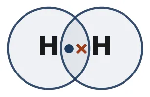
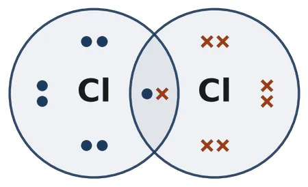
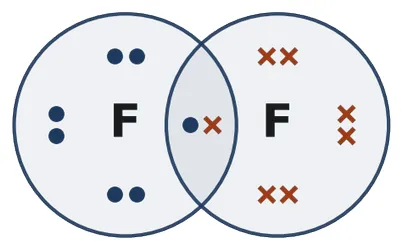
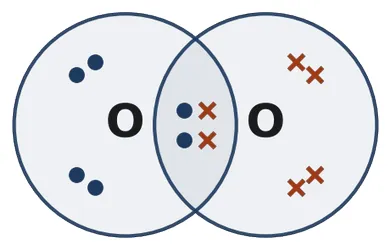
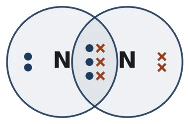
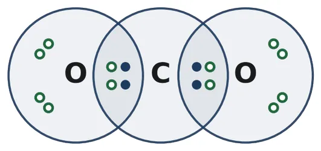
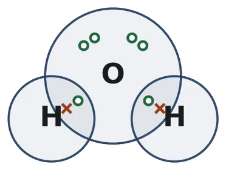
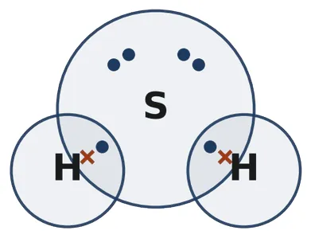
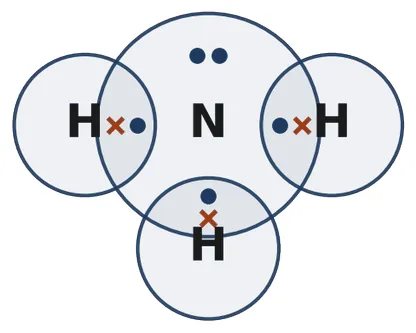
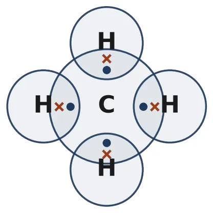
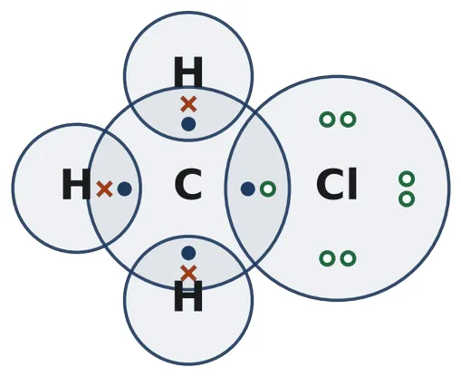
Key: • × ○ = valence electrons of different atoms. The shaded overlap of two circles holds the shared pair(s). Lone pairs stay inside each atom’s own circle.
2.5 Properties of covalent compounds
- Low melting and boiling points: the bonds within a molecule are strong, but the forces between molecules (intermolecular forces) are weak.
- Poor conductors of electricity: electrons are shared and no charged particles (ions) are formed.
- Solubility: generally insoluble (or less soluble) in water but soluble in organic solvents such as kerosene and benzene. (Ethanol, ethanoic acid and sugar are exceptions that dissolve in water.)
- Physical state: usually gases, liquids or soft solids at room temperature.
| Ionic compounds | Covalent compounds |
|---|---|
| Formed by transfer of electrons | Formed by sharing of electrons |
| Made of ions (e.g. Na+ and Cl−) | Made of molecules |
| High melting and boiling points | Low melting and boiling points |
| Conduct electricity in molten state or in solution | Generally do not conduct electricity |
| Usually soluble in water, insoluble in kerosene/petrol | Usually insoluble in water, soluble in organic solvents |
| Hard, crystalline solids | Gases, liquids or soft solids |
| Examples: NaCl, MgO, CaCl2 | Examples: CH4, CO2, C2H5OH |
🎯 Exam tip: counting covalent bonds quickly
- In an alkane CnH2n+2: number of covalent bonds = 3n + 1 → ethane (n = 2): 7; propane: 10; butane: 13; pentane: 16.
- Counting shared electron pairs (a double bond = 2 pairs, a triple bond = 3 pairs): alkene CnH2n → 3n; alkyne CnH2n−2 → 3n − 1. Example: C2H4 has C=C (2 pairs) + 4 C–H = 6 pairs.
Allotropes of carbon
📖 Definition
Allotropy: the property by which an element exists in two or more forms that have different physical properties but similar chemical properties. These different forms are called allotropes.
Carbon occurs in different forms in nature with widely varying physical properties. Diamond, graphite and fullerenes are all made of carbon atoms; the difference lies only in the way the carbon atoms are bonded to one another.
3.1 Diamond
- Each carbon atom is bonded to four other carbon atoms (single covalent bonds), forming a rigid three-dimensional network (tetrahedral arrangement).
- Hardest natural substance known; very high melting point.
- Bad conductor of electricity: all 4 valence electrons are used in bonding; no free electrons.
- Transparent; sparkles brilliantly when cut and polished.
- Uses: jewellery; cutting glass and drilling rocks (diamond-tipped tools).
- Synthetic diamonds are made by subjecting pure carbon to very high pressure and temperature. They are small but otherwise indistinguishable from natural diamonds.
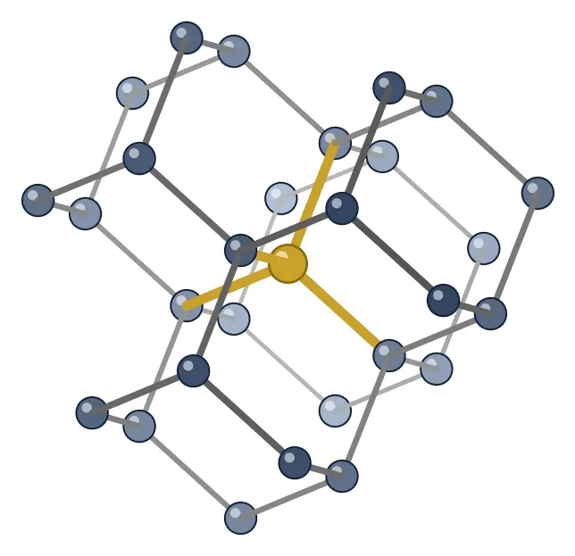
3.2 Graphite
- Each carbon atom is bonded to three other carbon atoms in the same plane, giving a hexagonal array. One of these bonds is a double bond, so the valency of carbon is satisfied.
- Hexagonal layers lie one above another, held by weak forces → layers slide → soft and slippery.
- Good conductor of electricity, unlike other non-metals (it has free, mobile electrons).
- Black, opaque and smooth/greasy to touch.
- Uses: dry lubricant for machine parts; electrodes in dry cells and electrolysis; the “lead” of pencils (graphite mixed with clay).
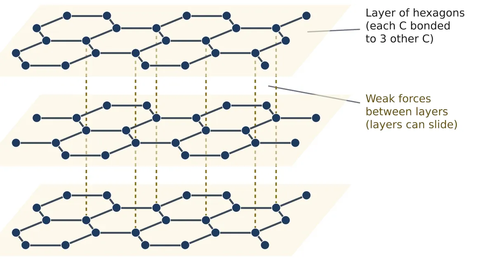
3.3 Fullerenes
- Fullerenes form another class of carbon allotropes. The first one identified was C60 (buckminsterfullerene), in which 60 carbon atoms are arranged in the shape of a football (12 pentagons and 20 hexagons).
- Its structure looked like the geodesic dome designed by the US architect Buckminster Fuller, so the molecule was named fullerene.
- Each carbon atom is bonded to three other carbon atoms.
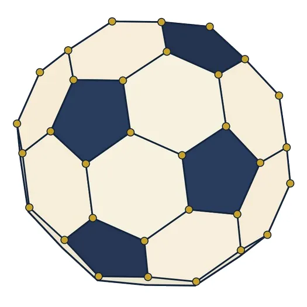
3.4 Diamond vs graphite
| Property | Diamond | Graphite |
|---|---|---|
| Bonding of each C atom | Bonded to 4 other C atoms | Bonded to 3 other C atoms |
| Structure | Rigid 3-D network | Flat hexagonal layers held by weak forces |
| Hardness | Hardest natural substance | Soft and slippery |
| Electrical conductivity | Non-conductor | Good conductor |
| Appearance | Transparent, brilliant | Black, opaque, shiny |
| Uses | Jewellery, cutting and drilling tools | Lubricant, electrodes, pencil lead |
📌 Remember
All allotropes of carbon have the same chemical properties. Each burns in oxygen to give only carbon dioxide, which proves that they are all made of carbon:
✨ Do you know?
Coal, charcoal, coke and lamp black (soot) are amorphous (non-crystalline) forms of carbon. Graphene is a single layer of graphite only one atom thick; it is extremely strong and an excellent conductor.
Versatile nature of carbon
According to NCERT, the number of carbon compounds whose formulae are known to chemists is about three million, far more than the compounds formed by all the other elements put together! The nature of the covalent bond allows carbon to form so many compounds. Two features are responsible:
4.1 Catenation
📖 Definition
Catenation: the unique ability of carbon to form covalent bonds with other carbon atoms, giving rise to large molecules: long chains, branched chains or rings.
- Carbon atoms may be linked by single, double or triple bonds.
- The C–C bond is very strong and stable, so long chains of carbon atoms are possible.
- No other element shows catenation to this extent. Silicon forms compounds with hydrogen having chains of only 7 or 8 atoms, and these compounds are very reactive.
- Compounds with only single C–C bonds are saturated; compounds with double or triple C–C bonds are unsaturated.
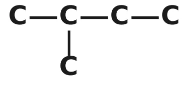
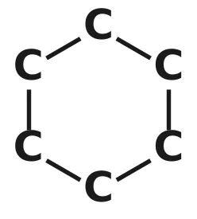
4.2 Tetravalency
- Carbon has a valency of 4, so it can bond with four other atoms, of carbon or of monovalent elements such as hydrogen and chlorine.
- Carbon forms compounds with oxygen, hydrogen, nitrogen, sulphur, chlorine and many other elements. The specific properties of each compound depend on the elements other than carbon present in it.
- The bonds formed by carbon with most other elements are very strong, which makes these compounds exceptionally stable.
4.3 Why are carbon’s bonds so strong?
One reason is the small size of the carbon atom. Its nucleus holds the shared pairs of electrons strongly. Bonds formed by elements with bigger atoms are much weaker.
📌 Remember
Catenation + tetravalency (together with strong bonds due to small size) → an enormous number of stable carbon compounds.
🎯 Exam tip
Q: “What are the two properties of carbon which lead to the huge number of carbon compounds?” → Catenation and tetravalency. Write one line explaining each for full marks.
Hydrocarbons: saturated and unsaturated
📖 Definition
Hydrocarbons: compounds made up of only carbon and hydrogen. Their main sources are petroleum and natural gas.
| Alkanes | Alkenes | Alkynes | |
|---|---|---|---|
| C–C bonds | Only single bonds | One double bond (C=C) | One triple bond (C≡C) |
| Nature | Saturated | Unsaturated | Unsaturated |
| General formula | CnH2n+2 | CnH2n | CnH2n−2 |
| Name ends in | -ane | -ene | -yne |
| First member | Methane, CH4 | Ethene, C2H4 | Ethyne, C2H2 |
| Reactivity | Less reactive | More reactive | More reactive |
5.1 Saturated hydrocarbons: alkanes
Carbon compounds in which the carbon atoms are linked by only single bonds are saturated. All the valencies of the atoms are satisfied by single bonds, so these compounds are normally not very reactive.
🎯 How to draw the structure of a carbon compound (NCERT method)
- Link the carbon atoms together with single bonds (the carbon “skeleton”).
- Use hydrogen atoms to satisfy the remaining valencies of each carbon (4 bonds per C).
- If there are not enough H atoms, put a double or triple bond between carbon atoms so that every carbon still has 4 bonds.
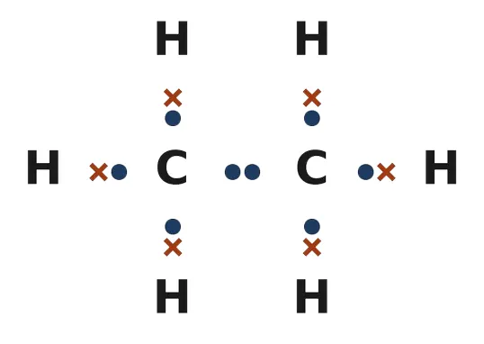
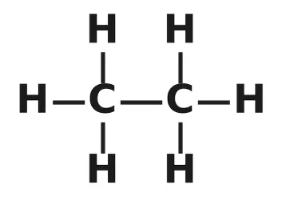
| n | Name | Molecular formula | Condensed formula | Mol. mass (u) | State (room temp.) |
|---|---|---|---|---|---|
| 1 | Methane | CH4 | CH4 | 16 | Gas |
| 2 | Ethane | C2H6 | CH3–CH3 | 30 | Gas |
| 3 | Propane | C3H8 | CH3–CH2–CH3 | 44 | Gas |
| 4 | Butane | C4H10 | CH3–CH2–CH2–CH3 | 58 | Gas |
| 5 | Pentane | C5H12 | CH3–(CH2)3–CH3 | 72 | Liquid |
| 6 | Hexane | C6H14 | CH3–(CH2)4–CH3 | 86 | Liquid |
| 7 | Heptane | C7H16 | CH3–(CH2)5–CH3 | 100 | Liquid |
| 8 | Octane | C8H18 | CH3–(CH2)6–CH3 | 114 | Liquid |
| 9 | Nonane | C9H20 | CH3–(CH2)7–CH3 | 128 | Liquid |
| 10 | Decane | C10H22 | CH3–(CH2)8–CH3 | 142 | Liquid |
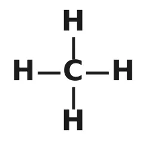
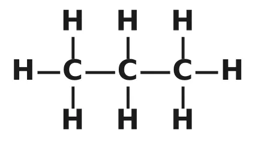
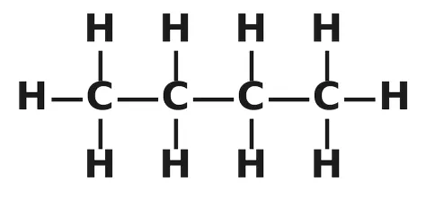
5.2 Unsaturated hydrocarbons: alkenes and alkynes
Ethene (C2H4): if we join the two carbon atoms by a single bond and attach the four hydrogen atoms, each carbon still has one unsatisfied valency. This is satisfied only if there is a double bond between the two carbon atoms. In the same way, ethyne (C2H2) needs a triple bond.
Compounds of carbon having double or triple bonds between carbon atoms are unsaturated. They are more reactive than saturated compounds.
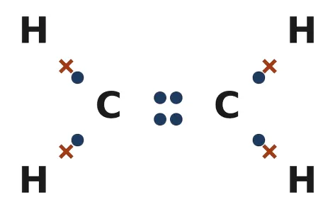
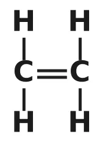
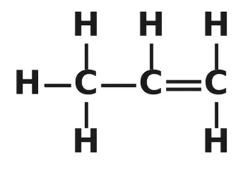
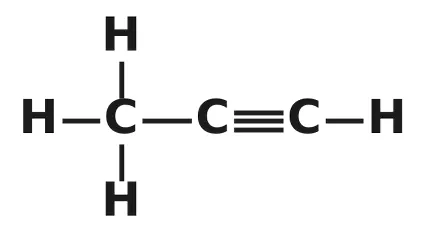
| Alkene | Formula | Condensed formula | Alkyne | Formula | Condensed formula |
|---|---|---|---|---|---|
| Ethene | C2H4 | CH2=CH2 | Ethyne | C2H2 | HC≡CH |
| Propene | C3H6 | CH3–CH=CH2 | Propyne | C3H4 | CH3–C≡CH |
| Butene | C4H8 | CH3–CH2–CH=CH2 | Butyne | C4H6 | CH3–CH2–C≡CH |
| Pentene | C5H10 | CH3–(CH2)2–CH=CH2 | Pentyne | C5H8 | CH3–(CH2)2–C≡CH |
⚠️ Common mistake
There is no “methene” or “methyne”. A double or triple bond needs at least two carbon atoms, so the alkene and alkyne series start with 2 carbons.
5.3 Saturated vs unsaturated hydrocarbons
| Saturated hydrocarbons | Unsaturated hydrocarbons |
|---|---|
| Only single bonds between carbon atoms | At least one double (C=C) or triple (C≡C) bond |
| Alkanes: CnH2n+2 | Alkenes: CnH2n; alkynes: CnH2n−2 |
| Less reactive (fairly unreactive) | More reactive |
| Undergo substitution reactions | Undergo addition reactions |
| Burn with a clean blue flame | Burn with a yellow, sooty (smoky) flame |
| Do not decolourise bromine water | Decolourise reddish-brown bromine water |
| Examples: methane, ethane, propane | Examples: ethene, propene, ethyne |
🎯 Test to distinguish saturated and unsaturated compounds
- Bromine water test: shake the compound with a few drops of bromine water (reddish-brown). An unsaturated compound decolourises it (addition of bromine); a saturated compound does not.
- Flame test: burn the compound on a spatula. Unsaturated compounds give a sooty flame and leave a black deposit on a plate held above.
Chains, branches, rings and isomers
6.1 Chains, branches and rings
Carbon atoms can be arranged in straight chains, branched chains or rings (cyclic compounds). All three types may be saturated or unsaturated.
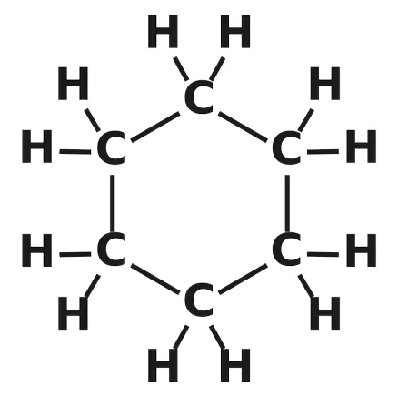
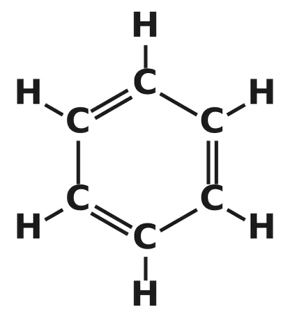
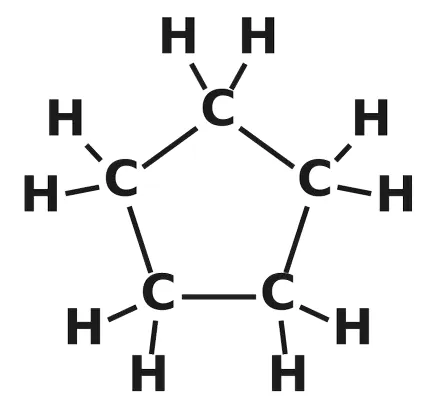
- Compounds containing only carbon and hydrogen are hydrocarbons: saturated ones are alkanes; those with one or more double bonds are alkenes; those with one or more triple bonds are alkynes.
- Ring compounds of alkanes (cycloalkanes) have the general formula CnH2n, the same as alkenes, even though they are saturated.
6.2 Structural isomerism
📖 Definition
Structural isomers: compounds having the same molecular formula but different structures (different arrangement of atoms). The phenomenon is called structural isomerism.
Butane (C4H10): with four carbon atoms, two different carbon skeletons are possible:
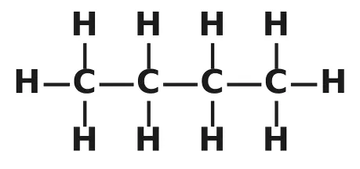
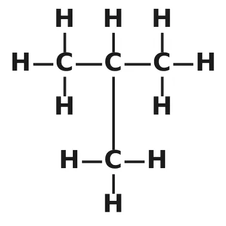
Pentane (C5H12) has three structural isomers:
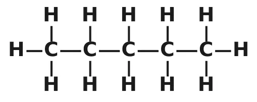
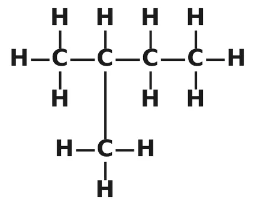
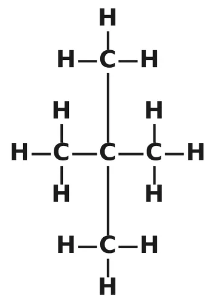
- Methane, ethane and propane have no isomers; isomerism in alkanes starts with butane (C4).
- The number of isomers rises quickly: C4H10 → 2, C5H12 → 3, C6H14 → 5.
- Isomers have different physical properties (e.g. boiling points), as shown above.
⚠️ Common mistake
Bending a chain on paper does not make a new isomer! CH3–CH2–CH2–CH3 drawn with a bend is still n-butane. Check the longest continuous carbon chain and the position of branches before calling two structures isomers.
Functional groups
Carbon is a very “friendly” element. Besides hydrogen, it forms bonds with halogens, oxygen, nitrogen and sulphur. In a hydrocarbon chain, one or more hydrogen atoms can be replaced by these elements so that the valency of carbon remains satisfied.
📖 Definitions
Heteroatom: an element other than carbon and hydrogen (e.g. Cl, Br, O, N, S) that replaces hydrogen in a hydrocarbon chain.
Functional group: an atom or group of atoms (containing a heteroatom, or a C=C / C≡C bond) that gives a carbon compound its characteristic properties, regardless of the length and nature of the carbon chain.
| Heteroatom | Class of compound | Functional group | Structure | Name ending | Example |
|---|---|---|---|---|---|
| Cl / Br | Haloalkane | –Cl, –Br (–X) | prefix chloro-, bromo- | CH3Cl, chloromethane | |
| Oxygen | Alcohol | –OH | suffix -ol | C2H5OH, ethanol | |
| Oxygen | Aldehyde | –CHO | 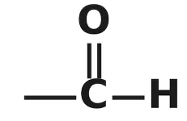 | suffix -al | CH3CHO, ethanal |
| Oxygen | Ketone | –CO– | 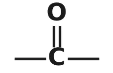 | suffix -one | CH3COCH3, propanone |
| Oxygen | Carboxylic acid | –COOH | 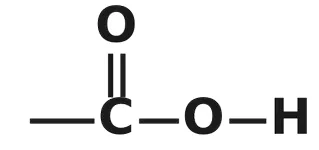 | suffix -oic acid | CH3COOH, ethanoic acid |
| — | Alkene | C=C | 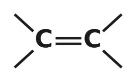 | suffix -ene | CH2=CH2, ethene |
| — | Alkyne | C≡C | suffix -yne | HC≡CH, ethyne |
The free valency of a group is shown by a single line. The group joins the carbon chain through this valency by replacing a hydrogen atom.
📌 Remember
- The –CHO (aldehyde) and –COOH (carboxylic acid) groups are always at the end of a chain, and their carbon atom is counted in the chain.
- The ketone group (–CO–) has two free valencies, so it is always inside the chain. The smallest ketone therefore has 3 carbon atoms (propanone).
- The letter R stands for any alkyl group: R–OH (alcohol), R–CHO (aldehyde), R–CO–R (ketone), R–COOH (acid), R–X (haloalkane).
Common names you should know
| IUPAC name | Common name | Where you meet it |
|---|---|---|
| Methanal (HCHO) | Formaldehyde | Its 40% solution, formalin, preserves biological specimens |
| Ethanal (CH3CHO) | Acetaldehyde | Used to make other chemicals |
| Propanone (CH3COCH3) | Acetone | Solvent; nail-polish remover |
| Methanoic acid (HCOOH) | Formic acid | Present in ant stings and nettle leaves |
| Ethanoic acid (CH3COOH) | Acetic acid | Vinegar |
| Ethanol (C2H5OH) | Ethyl alcohol | Medicines, fuel, alcoholic drinks |
| Ethene (C2H4) / Ethyne (C2H2) | Ethylene / Acetylene | Ripening fruit, plastics / welding |
Homologous series
📖 Definition
Homologous series: a series of carbon compounds in which the same functional group substitutes for hydrogen in a carbon chain. Successive members differ by a –CH2– unit.
Example (alcohols): CH3OH, C2H5OH, C3H7OH and C4H9OH all contain the –OH group, and their chemical properties are very similar.
| Pair of successive members | Difference in formula | Difference in molecular mass |
|---|---|---|
| CH3OH (32 u) and C2H5OH (46 u) | –CH2– | 14 u |
| C2H5OH (46 u) and C3H7OH (60 u) | –CH2– | 14 u |
| C3H7OH (60 u) and C4H9OH (74 u) | –CH2– | 14 u |
Atomic masses: C = 12 u, H = 1 u, O = 16 u. So one CH2 unit = 12 + 2 = 14 u.
8.1 Characteristics of a homologous series
- All members have the same functional group.
- All members can be represented by the same general formula.
- Successive members differ by a –CH2– unit in their molecular formula.
- Successive members differ by 14 u in molecular mass.
- All members have similar chemical properties (decided by the functional group).
- Physical properties show a gradation (gradual change): melting and boiling points increase with increasing molecular mass; solubility in a particular solvent also changes gradually.
8.2 General formulae
| Homologous series | General formula | First member | Smallest n |
|---|---|---|---|
| Alkanes | CnH2n+2 | CH4 (methane) | 1 |
| Alkenes | CnH2n | C2H4 (ethene) | 2 |
| Alkynes | CnH2n−2 | C2H2 (ethyne) | 2 |
| Haloalkanes | CnH2n+1X (X = Cl, Br) | CH3Cl (chloromethane) | 1 |
| Alcohols | CnH2n+1OH | CH3OH (methanol) | 1 |
| Aldehydes | CnH2nO | HCHO (methanal) | 1 |
| Ketones | CnH2nO | CH3COCH3 (propanone) | 3 |
| Carboxylic acids | CnH2nO2 | HCOOH (methanoic acid) | 1 |
Here n = total number of carbon atoms in the molecule.
8.3 Homologous series up to four carbon atoms
| C atoms | Haloalkane | Alcohol | Aldehyde | Ketone | Carboxylic acid |
|---|---|---|---|---|---|
| 1 | CH3Cl chloromethane | CH3OH methanol | HCHO methanal | — | HCOOH methanoic acid |
| 2 | C2H5Cl chloroethane | C2H5OH ethanol | CH3CHO ethanal | — | CH3COOH ethanoic acid |
| 3 | C3H7Cl chloropropane | C3H7OH propanol | C2H5CHO propanal | CH3COCH3 propanone | C2H5COOH propanoic acid |
| 4 | C4H9Cl chlorobutane | C4H9OH butanol | C3H7CHO butanal | CH3COC2H5 butanone | C3H7COOH butanoic acid |
⚠️ Common mistake
Isomers are not homologues. Butane and isobutane (both C4H10) are isomers; butane (C4H10) and pentane (C5H12) are homologues: they differ by CH2.
Nomenclature of carbon compounds
Carbon compounds are named by the IUPAC system (International Union of Pure and Applied Chemistry). The name of a compound in a homologous series is based on the name of the basic carbon chain, modified by a prefix (phrase before) or suffix (phrase after) that shows the functional group.
Word roots: number of carbon atoms
| C atoms | 1 | 2 | 3 | 4 | 5 | 6 | 7 | 8 | 9 | 10 |
|---|---|---|---|---|---|---|---|---|---|---|
| Root | Meth | Eth | Prop | But | Pent | Hex | Hept | Oct | Non | Dec |
Rules for naming (NCERT)
- Count the carbon atoms in the chain (include the carbon of –CHO, –COOH or –CO–) and write the name of the parent alkane. Three carbons → propane.
- Show the functional group by a prefix or a suffix (table below).
- If the suffix begins with a vowel (a, e, i, o, u), drop the final “e” of the parent name: propane − e + one = propanone; propane − e + ol = propanol.
- If the carbon chain is unsaturated, replace “ane” by “ene” (double bond) or “yne” (triple bond): propene, propyne.
Nomenclature table: the propane family
| Class | Prefix / suffix | Formula | Name |
|---|---|---|---|
| Haloalkane | Prefix: chloro | CH3CH2CH2Cl | Chloropropane |
| Haloalkane | Prefix: bromo | CH3CH2CH2Br | Bromopropane |
| Alcohol | Suffix: -ol | CH3CH2CH2OH | Propanol |
| Aldehyde | Suffix: -al | CH3CH2CHO | Propanal |
| Ketone | Suffix: -one | CH3COCH3 | Propanone |
| Carboxylic acid | Suffix: -oic acid | CH3CH2COOH | Propanoic acid |
| Alkene | Suffix: -ene | CH3CH=CH2 | Propene |
| Alkyne | Suffix: -yne | CH3C≡CH | Propyne |
Structures of the propane family:
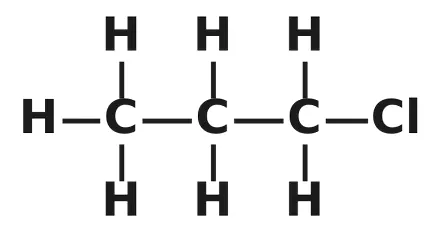
CH3CH2CH2Cl
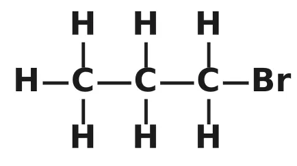
CH3CH2CH2Br
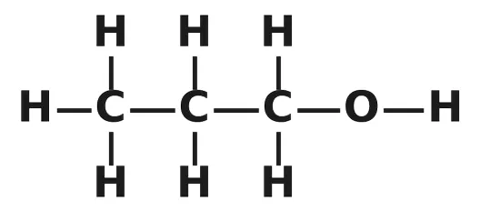
CH3CH2CH2OH
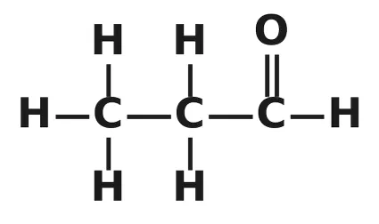
CH3CH2CHO
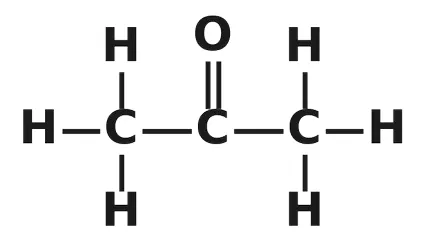
CH3COCH3
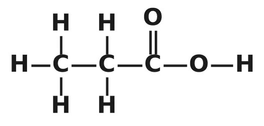
CH3CH2COOH
CH3CH=CH2
CH3C≡CH
Worked examples: formula → name
| Formula | How to think | Name |
|---|---|---|
| CH3–CH2–Br | 2 C → ethane; Br → prefix bromo | Bromoethane |
| HCHO | 1 C (the CHO carbon) → methane; –CHO → -al | Methanal |
| HC≡C–CH2–CH2–CH2–CH3 | 6 C → hexane; triple bond → -yne | Hexyne |
| CH3–CO–CH2–CH3 | 4 C → butane; –CO– → -one | Butanone |
| CH3–CH2–CH2–CH2–CH2–CHO | 6 C (count the CHO carbon) → -al | Hexanal |
| CH3–CH2–CH2–CH2–CH2–Br | 5 C → pentane; Br → bromo | Bromopentane |
| CH3–CH2–CH2–CH2–OH | 4 C → butane; –OH → -ol | Butanol |
| CH3–COOH | 2 C → ethane; –COOH → -oic acid | Ethanoic acid |
| CH3–CH=CH–CH3 | 4 C → butane; double bond → -ene | Butene |
Worked examples: name → structure
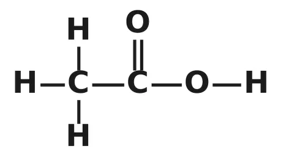
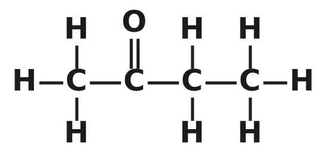
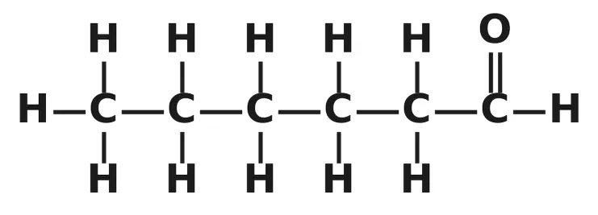
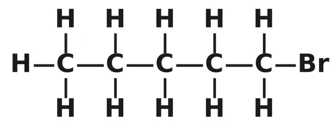
Are structural isomers possible for bromopentane? Yes. The Br atom can be attached to different carbon atoms, and the carbon chain can also be branched. For example:
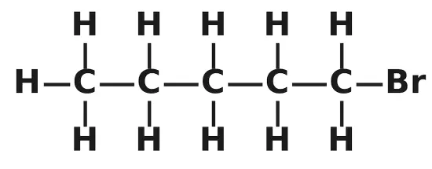
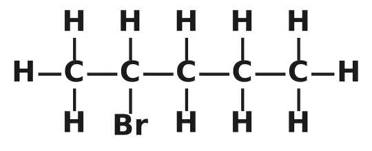
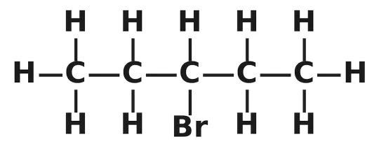
🎯 Exam tip
Position numbers (as in propan-1-ol or but-2-ene) are not required in Class 10. Follow NCERT and simply write propanol, butene, chloropropane, etc.
⚠️ Common mistakes
- There is no “methanone” or “ethanone”: a ketone needs at least 3 carbon atoms.
- CH3CHO is ethanal (2 C), not methanal; HCOOH is methanoic acid (1 C). Always count the carbon of –CHO and –COOH.
- Drop the “e” only before a vowel: propanol, propanal, propanone. But chloropropane keeps the full name because “chloro” is a prefix.
Chemical properties of carbon compounds
Most of the fuels we use are carbon or its compounds. We study four important types of reactions: combustion, oxidation, addition and substitution.
10.1 Combustion
📖 Definition
Combustion: the burning of a substance in oxygen (air) to give heat and light. It is an oxidation reaction and is exothermic.
Carbon, in all its allotropic forms, burns in oxygen to give carbon dioxide along with heat and light. Most carbon compounds also release a large amount of heat and light on burning.
NCERT writes the methane and ethanol equations without coefficients and asks you to balance them; the balanced forms are given above.
Complete and incomplete combustion
| Complete combustion | Incomplete combustion |
|---|---|
| Sufficient supply of oxygen (air) | Limited supply of oxygen |
| Products: CO2 and H2O | Products: carbon monoxide (CO, poisonous) and/or carbon (soot) |
| Clean blue flame; no smoke | Yellow, sooty (smoky) flame |
| More heat produced | Less heat produced; fuel is wasted |
| CH4 + 2O2 → CO2 + 2H2O | 2CH4 + 3O2 → 2CO + 4H2O |
Nature of the flame
- Saturated hydrocarbons generally burn with a clean flame.
- Unsaturated carbon compounds burn with a yellow flame with lots of black smoke; this leaves a sooty deposit on a metal plate held above the flame.
- Limiting the supply of air causes incomplete combustion, so even saturated hydrocarbons then give a sooty flame.
- A gas or kerosene stove has inlets for air, so that an oxygen-rich mixture burns with a clean blue flame. If the bottoms of cooking vessels are getting blackened, the air holes are blocked and fuel is being wasted.
- Coal and petroleum contain some nitrogen and sulphur. Their combustion forms oxides of sulphur and nitrogen, which are major pollutants of our environment.
🧪 Activity: burning carbon compounds (with your teacher’s help)
- Burn naphthalene, camphor and alcohol one by one on a spatula and hold a metal plate above each flame. Naphthalene and camphor burn with a yellow, sooty flame and leave a black deposit; alcohol burns with a clean flame and leaves no deposit.
- Bunsen burner: with the air hole closed, the flame is yellow and sooty (incomplete combustion); with the air hole open, it is blue (complete combustion).
Why do some substances burn with a flame and others without?
- A flame is produced only when gaseous substances burn.
- When wood or charcoal is ignited, the volatile substances present vaporise and burn with a flame in the beginning. Coal or charcoal in an angithi often just glows red and gives out heat without a flame.
- A luminous (yellow) flame is seen when the atoms of the gaseous substance are heated and start to glow. The yellow colour of a candle flame comes from glowing, unburnt carbon (soot) particles.
- The colour produced by each element is characteristic of that element: a copper wire heated in a gas flame gives a bluish-green colour.
Why are carbon and its compounds used as fuels?
- They burn in air releasing a large amount of heat and light (high calorific value).
- Their combustion can be controlled, and their ignition temperature is moderate.
- Many of them (wood, coal, LPG, petrol, CNG) are easily available and easy to store and transport.
- Saturated hydrocarbons burn with a clean flame, giving carbon dioxide and water.
Fossil fuels: formation of coal and petroleum
- Coal is the remains of trees, ferns and other plants that lived millions of years ago. They were crushed into the earth (perhaps by earthquakes or volcanic eruptions), pressed down by layers of earth and rock, and slowly decayed into coal.
- Petroleum and natural gas are the remains of millions of tiny plants and animals that lived in the sea. When they died, their bodies sank to the sea bed and were covered by silt. Bacteria attacked the remains and, under high pressure, turned them into oil and gas. The silt was slowly compressed into rock; the oil and gas seeped into its porous parts and were trapped like water in a sponge.
- They are called fossil fuels because they were formed from the remains (fossils) of living organisms over millions of years.
Oxy-acetylene welding
A mixture of ethyne (acetylene) and oxygen is burnt for welding. Complete combustion gives a very hot flame (above 3000 °C) that melts metals:
Why not air? Air contains only about 21% oxygen (it is mostly nitrogen). A mixture of ethyne and air burns incompletely with a sooty flame, and the temperature reached is not high enough for welding.
10.2 Oxidation
Combustion is complete oxidation. Carbon compounds can also be oxidised in a controlled way: alcohols are converted into carboxylic acids by oxidising agents.
Writing the oxygen supplied by the oxidising agent as [O]: CH3CH2OH + 2[O] → CH3COOH + H2O
📖 Definition
Oxidising agents: substances that are capable of adding oxygen to others (or removing hydrogen). Examples: alkaline potassium permanganate (KMnO4) and acidified potassium dichromate (K2Cr2O7).
🧪 Activity: oxidation of ethanol
Warm about 3 mL of ethanol in a water bath and add a 5% solution of alkaline KMnO4 drop by drop.
- At first, the purple colour disappears: KMnO4 is used up in oxidising ethanol.
- When excess KMnO4 is added, the colour persists: there is no ethanol left to react.
📌 Why is ethanol → ethanoic acid an oxidation?
Ethanol (C2H6O) gains one oxygen atom and loses two hydrogen atoms to become ethanoic acid (C2H4O2). Addition of oxygen / removal of hydrogen = oxidation.
10.3 Addition reaction
📖 Definition
Addition reaction: a reaction in which atoms or molecules add across a double or triple bond, converting an unsaturated compound into a saturated one. Only unsaturated compounds show addition reactions.
Unsaturated hydrocarbons add hydrogen in the presence of catalysts such as palladium or nickel to give saturated hydrocarbons. This addition of hydrogen is called hydrogenation.
📖 Definition
Catalyst: a substance that causes a reaction to occur or to proceed at a different rate without the reaction itself affecting it (it is not used up).
Industrial application: hydrogenation of vegetable oils
- Vegetable oils generally have long unsaturated carbon chains (liquids); animal fats have saturated carbon chains (solids).
- Vegetable oils are hydrogenated using a nickel catalyst to make vanaspati ghee.
- Animal fats generally contain saturated fatty acids, which are said to be harmful for health. Oils containing unsaturated fatty acids should be chosen for cooking.
🎯 Bromine water: a test based on addition
Reddish-brown bromine adds across the double bond, so the colour disappears:
Cooking oil (unsaturated) decolourises bromine water; butter (saturated animal fat) does not. Among C2H6, C3H8, C3H6, C2H2 and CH4, only C3H6 and C2H2 (unsaturated) undergo addition reactions.
10.4 Substitution reaction
Saturated hydrocarbons are fairly unreactive and are inert in the presence of most reagents. However, in the presence of sunlight, chlorine reacts with hydrocarbons in a very fast reaction: chlorine replaces the hydrogen atoms one by one.
📖 Definition
Substitution reaction: a reaction in which one type of atom or group of atoms takes the place of another.
With higher homologues of alkanes, a number of products are usually formed. For example, ethane gives chloroethane first: C2H6 + Cl2 → C2H5Cl + HCl (in sunlight).
| Addition reaction | Substitution reaction |
|---|---|
| Shown by unsaturated compounds | Shown by saturated compounds |
| Atoms are added across C=C or C≡C; nothing is removed | One atom or group replaces another |
| Usually gives a single product | Often gives a mixture of products |
| Unsaturated compound becomes saturated | Compound remains saturated |
| Example: ethene + H2 → ethane (Ni catalyst) | Example: CH4 + Cl2 → CH3Cl + HCl (sunlight) |
Ethanol
Ethanol (ethyl alcohol), C2H5OH or CH3CH2OH, is one of the two commercially important carbon compounds studied in this chapter. It is commonly called alcohol.
Functional group: –OH (alcohol)
11.1 Physical properties
- Colourless liquid at room temperature with a characteristic smell and burning taste.
- Melting point 156 K (−117 °C); boiling point 351 K (78 °C): it is volatile.
- Soluble in water in all proportions.
- Neutral: it has no effect on litmus.
- A good solvent for many substances; highly inflammable (burns with a blue flame).
11.2 Uses
- Active ingredient of all alcoholic drinks.
- Being a good solvent, it is used in medicines such as tincture iodine, cough syrups and many tonics.
- An important industrial solvent, and used to make other chemicals (ethanoic acid, esters).
- Fuel: added to petrol as a cleaner fuel. India now sells E20 petrol (20% ethanol + 80% petrol).
- Antiseptic: used to clean wounds and in hand sanitisers.
11.3 Chemical properties
(i) Combustion
(ii) Reaction with sodium
- Alcohols react with sodium to give hydrogen gas; with ethanol, the other product is sodium ethoxide.
- Test for hydrogen: bring a burning splinter near the gas. It burns with a pop sound.
- Acids also give hydrogen with metals. (Teacher demonstration only: sodium reacts vigorously.)
(iii) Dehydration: formation of an unsaturated hydrocarbon
Heating ethanol at 443 K with excess concentrated sulphuric acid removes a water molecule from it. Concentrated H2SO4 acts as a dehydrating agent.
(iv) Oxidation and (v) esterification
Ethanol is oxidised to ethanoic acid by alkaline KMnO4 or acidified K2Cr2O7 (Section 10.2), and reacts with ethanoic acid to form a sweet-smelling ester (Section 12).
⚠️ Health alert: how do alcohols affect living beings?
- Large quantities of ethanol slow metabolic processes and depress the central nervous system → lack of coordination, mental confusion, drowsiness, lowering of normal inhibitions and finally stupour. The person may feel relaxed but does not realise that judgement, sense of timing and muscular coordination are seriously impaired.
- Intake of even a small quantity of pure ethanol (absolute alcohol) can be lethal, and long-term consumption leads to many health problems.
- Methanol is deadly even in very small quantities. In the liver it is oxidised to methanal, which reacts rapidly with the components of cells and coagulates the protoplasm (like an egg on cooking). Methanol also affects the optic nerve, causing blindness.
- Denatured alcohol: industrial ethanol is made unfit for drinking by adding poisonous substances like methanol; a blue dye is added so that it can be identified easily.
✨ Do you know? Alcohol as a fuel
Sugarcane plants are among the most efficient converters of sunlight into chemical energy. Sugarcane juice is used to make molasses, which is fermented to give ethanol. Ethanol is a cleaner fuel (in sufficient oxygen it gives only carbon dioxide and water on burning), so many countries, including India, add it to petrol.
Ethanoic acid
Ethanoic acid (acetic acid), CH3COOH, belongs to the group of organic acids called carboxylic acids (functional group –COOH).
A 5–8% solution of acetic acid in water is called vinegar; it is widely used as a preservative in pickles.
12.1 Physical properties
- Colourless liquid with a sour taste and a pungent, vinegar-like smell.
- Melting point 290 K (17 °C), so pure ethanoic acid often freezes during winter in cold climates; hence the name glacial acetic acid. Boiling point 391 K (118 °C).
- Mixes with water in all proportions.
- Weak acid: carboxylic acids are only partially ionised, unlike mineral acids such as HCl, which are completely ionised.
🧪 Activity: weak acid vs strong acid
Test dilute acetic acid and dilute hydrochloric acid with blue litmus and universal indicator. Both turn blue litmus red, but universal indicator shows a lower pH for HCl, so ethanoic acid is the weaker acid.
12.2 Chemical properties
(i) Esterification
- Esters are formed by the reaction of an acid and an alcohol in the presence of an acid catalyst.
- Esters are sweet (fruity)-smelling substances, used in making perfumes and as flavouring agents.
🧪 Activity: making an ester
Take 1 mL absolute ethanol and 1 mL glacial acetic acid with a few drops of concentrated H2SO4 in a test tube. Warm in a water bath for at least five minutes, then pour into a beaker containing 20–50 mL of water and smell. A sweet, fruity smell shows that an ester has formed.
(ii) Saponification
On treating with sodium hydroxide (an alkali), the ester is converted back to alcohol and the sodium salt of the carboxylic acid. This reaction is called saponification because it is used in the preparation of soap.
(iii) Reaction with a base (neutralisation)
(iv) Reaction with carbonates and hydrogencarbonates
Ethanoic acid reacts with carbonates and hydrogencarbonates to give a salt, carbon dioxide and water. The CO2 turns lime water milky.
✨ Do you know?
Like other acids, ethanoic acid also reacts with active metals to give hydrogen: 2CH3COOH + 2Na → 2CH3COONa + H2↑. So sodium metal cannot be used to tell ethanol and ethanoic acid apart: both give hydrogen!
12.3 Uses
- As vinegar: preservative in pickles and flavouring in food.
- To make esters used in perfumes and flavourings.
- In the manufacture of plastics, dyes, synthetic fibres and medicines; as a laboratory reagent.
12.4 How to distinguish ethanol and ethanoic acid
| Test / property | Ethanol | Ethanoic acid |
|---|---|---|
| Smell | Characteristic, pleasant smell | Pungent, vinegar-like smell |
| Melting point | 156 K: stays liquid in winter | 290 K: may freeze in cold winters |
| Boiling point | 351 K | 391 K |
| Litmus | No change (neutral) | Turns blue litmus red (acidic) |
| Sodium hydrogencarbonate (NaHCO3) | No reaction | Brisk effervescence of CO2; lime water turns milky |
| Sodium metal | H2 gas evolved | H2 gas evolved (not useful to distinguish) |
🎯 Exam tip
For “How would you distinguish experimentally between an alcohol and a carboxylic acid?”, the best answer is the NaHCO3 test: the acid gives brisk effervescence of CO2 (lime water turns milky); the alcohol gives none. Write the equation for full marks.
Soaps and detergents
Most dirt is oily in nature, and oil does not dissolve in water. So water alone cannot remove oily dirt; we need soaps or detergents.
🧪 Activity: effect of soap on oil and water
Take 10 mL water in each of two test tubes, A and B, and add a drop of cooking oil to both. Add a few drops of soap solution to B only and shake both equally. When left undisturbed, the oil layer separates first in A (no soap). In B, soap keeps the oil mixed with the water for longer: soap helps oil and water mix (forms an emulsion).
13.1 Soaps
📖 Definition
Soaps: sodium or potassium salts of long-chain carboxylic acids (fatty acids). Example: sodium stearate, C17H35COONa.
Soap is made by heating oils or fats with sodium hydroxide, the saponification reaction:
- Ionic end (–COO−Na+): hydrophilic (water-loving); it interacts with water.
- Long hydrocarbon chain: hydrophobic (water-hating); it interacts with oil and grease (hydrocarbons).
13.2 Micelles and the cleansing action of soap
- At the surface of water, soap molecules align with the ionic end in the water and the hydrocarbon tail sticking out of the water.
- Inside water, soap molecules form clusters in which the hydrophobic tails are in the interior and the ionic ends are on the surface. Such a cluster is called a micelle.
- The oily dirt collects in the centre of the micelle, and the micelles form an emulsion in water.
- Micelles stay in solution as a colloid and do not come together to precipitate, because of ion–ion repulsion (their surfaces carry similar negative charges).
- The dirt held in the micelles is therefore easily rinsed away.
- Soap micelles are large enough to scatter light; that is why a soap solution looks cloudy.
Cleansing action: step by step
- Soap dissolves in water; the hydrocarbon tails attach themselves to the oily dirt, while the ionic heads stay in water.
- Micelles form with the oily dirt trapped at their centre: an emulsion of oil in water.
- Agitation (rubbing, beating on a stone, scrubbing or a washing machine) loosens the dirt from the cloth fibres so the micelles can carry it away.
- Rinsing with water washes away the micelles along with the dirt, leaving the cloth clean.
📌 Three favourite questions
- Why is agitation necessary? It helps the soap micelles to dislodge the oily dirt from the cloth fibres and carry it into the water.
- Will micelles form in ethanol? No. The hydrocarbon tail of soap is also soluble in ethanol, so soap dissolves as separate molecules and does not need to form clusters.
- Soap and litmus: soap solution is basic; it turns red litmus blue, and blue litmus stays blue. (Soap is the salt of a strong base, NaOH, and a weak fatty acid.)
13.3 Hard water and scum
- Hard water contains salts of calcium and magnesium (their hydrogencarbonates, chlorides and sulphates).
- Soap reacts with Ca2+ and Mg2+ ions to form an insoluble substance called scum (white, curdy precipitate). Foam forms with difficulty, so a larger amount of soap is needed, and the scum sticks to clothes.
🧪 Activity: soap and detergent in hard water
- Shake a few drops of soap solution with distilled (or rain) water in one test tube and with hard water (from a tube well or hand pump) in another. Distilled water gives more foam; hard water gives a white curdy precipitate.
- Shake hard water with soap solution in one test tube and with detergent solution in another. The detergent gives plenty of foam and no curdy solid; the soap forms scum.
- If hard water is not available, it can be prepared by dissolving hydrogencarbonates, sulphates or chlorides of calcium or magnesium in water.
13.4 Detergents
- Detergents are generally sodium salts of sulphonic acids or ammonium salts with chloride or bromide ions. Both types have a long hydrocarbon chain.
- Their charged ends do not form insoluble precipitates with the calcium and magnesium ions of hard water, so they remain effective in hard water.
- Detergents are used to make shampoos and products for cleaning clothes.
- Can a detergent tell us whether water is hard? No. Detergents lather well in both hard and soft water, so there is no difference to observe. Use soap instead: hard water gives little foam and forms scum.
| Soaps | Detergents |
|---|---|
| Sodium or potassium salts of long-chain carboxylic acids | Sodium salts of long-chain sulphonic acids, or ammonium salts with chloride/bromide ions |
| Ionic group: –COO−Na+ | Ionic group: –SO3−Na+ (or an ammonium group) |
| Form scum with hard water; not effective in hard water | Do not form scum; effective even in hard water |
| Made from vegetable oils and animal fats | Made synthetically, mainly from petroleum products |
| Biodegradable | Some (branched-chain) detergents are not biodegradable and cause water pollution |
NCERT activities at a glance
| Activity | What we do | What we observe | Conclusion |
|---|---|---|---|
| Carbon around us | List 10 things used or eaten since morning | Most of them (food, clothes, fuel, paper) contain carbon | Carbon compounds are everywhere |
| Homologous series | Find the difference between CH3OH, C2H5OH, C3H7OH, C4H9OH | Each differs by –CH2– and 14 u | They form a homologous series |
| Burning compounds | Burn naphthalene, camphor, alcohol; hold a plate above | Naphthalene, camphor: sooty flame, black deposit; alcohol: clean flame | Unsaturated / carbon-rich compounds burn with a sooty flame |
| Bunsen flame | Close and open the air hole | Closed: yellow sooty flame; open: blue flame | Enough air is needed for complete combustion |
| Oxidation of ethanol | Add alkaline KMnO4 to warm ethanol | Purple colour disappears; persists when in excess | Ethanol → ethanoic acid; KMnO4 is an oxidising agent |
| Sodium + ethanol | Drop a tiny piece of Na into ethanol (teacher) | Effervescence; gas burns with a pop | H2 evolved; sodium ethoxide formed |
| Acid strength | Test dilute CH3COOH and HCl with litmus and universal indicator | Both turn blue litmus red; HCl shows lower pH | Ethanoic acid is a weak acid |
| Esterification | Warm ethanol + acetic acid + conc. H2SO4 | Sweet, fruity smell | An ester is formed |
| Acid + carbonate | Add ethanoic acid to Na2CO3 / NaHCO3 | Brisk effervescence; lime water turns milky | CO2 is evolved |
| Soap and oil | Shake oil + water with and without soap | Oil separates first without soap | Soap emulsifies oil |
| Soap in hard water | Soap with distilled water and with hard water | Less foam and curdy precipitate in hard water | Hard water forms scum with soap |
| Soap vs detergent | Soap and detergent with hard water | Detergent foams well, no scum | Detergents work in hard water |
Quick revision and mind map
Key definitions
| Term | Meaning |
|---|---|
| Covalent bond | Bond formed by sharing a pair of electrons between two atoms |
| Allotropes | Different physical forms of the same element with similar chemical properties |
| Catenation | Ability of carbon to form bonds with other carbon atoms → chains, branches, rings |
| Tetravalency | Carbon has valency 4; it can bond with four other atoms |
| Hydrocarbon | Compound of carbon and hydrogen only |
| Saturated compound | Only single bonds between carbon atoms (alkanes) |
| Unsaturated compound | Double or triple bond(s) between carbon atoms (alkenes, alkynes) |
| Structural isomers | Same molecular formula, different structures |
| Heteroatom | Atom other than C and H that replaces hydrogen in a carbon chain |
| Functional group | Atom/group that decides the characteristic properties of a carbon compound |
| Homologous series | Compounds with the same functional group; successive members differ by –CH2– (14 u) |
| Combustion | Burning in oxygen giving heat and light |
| Oxidising agent | Substance that adds oxygen to others (alkaline KMnO4, acidified K2Cr2O7) |
| Catalyst | Changes the rate of a reaction without itself being used up |
| Hydrogenation | Addition of hydrogen to unsaturated compounds (Ni/Pd catalyst) |
| Substitution | One atom/group takes the place of another (CH4 + Cl2 in sunlight) |
| Esterification | Acid + alcohol → ester + water (acid catalyst) |
| Saponification | Ester + NaOH → alcohol + sodium salt of acid; used to make soap |
| Soap | Sodium/potassium salt of a long-chain carboxylic acid |
| Detergent | Sodium salt of a long-chain sulphonic acid (or ammonium salt); works in hard water |
| Micelle | Cluster of soap molecules: tails inside (oil), ionic heads outside (water) |
| Scum | Insoluble precipitate formed by soap with Ca2+/Mg2+ ions of hard water |
| Denatured alcohol | Industrial ethanol made unfit to drink with methanol and a blue dye |
| Glacial acetic acid | Pure ethanoic acid (freezes at 290 K in cold winters) |
| Vinegar | 5–8% solution of acetic acid in water |
| Absolute alcohol | Pure ethanol |
Reaction bank
| # | Reaction | Equation | Condition |
|---|---|---|---|
| 1 | Combustion of methane | CH4 + 2O2 → CO2 + 2H2O + heat + light | Burning in air |
| 2 | Combustion of ethanol | C2H5OH + 3O2 → 2CO2 + 3H2O + heat + light | Burning in air |
| 3 | Oxidation of ethanol | CH3CH2OH → CH3COOH | Alk. KMnO4 or acid. K2Cr2O7, heat |
| 4 | Hydrogenation | CH2=CH2 + H2 → CH3–CH3 | Ni or Pd catalyst |
| 5 | Bromine water test | CH2=CH2 + Br2 → CH2Br–CH2Br | Room temperature |
| 6 | Chlorination of methane | CH4 + Cl2 → CH3Cl + HCl | Sunlight |
| 7 | Ethanol + sodium | 2Na + 2CH3CH2OH → 2CH3CH2ONa + H2 | — |
| 8 | Dehydration of ethanol | CH3CH2OH → CH2=CH2 + H2O | Hot conc. H2SO4, 443 K |
| 9 | Esterification | CH3COOH + C2H5OH → CH3COOC2H5 + H2O | Acid catalyst, warm |
| 10 | Saponification | CH3COOC2H5 + NaOH → C2H5OH + CH3COONa | — |
| 11 | Neutralisation | CH3COOH + NaOH → CH3COONa + H2O | — |
| 12 | Acid + carbonate | 2CH3COOH + Na2CO3 → 2CH3COONa + H2O + CO2 | — |
| 13 | Acid + hydrogencarbonate | CH3COOH + NaHCO3 → CH3COONa + H2O + CO2 | — |
| 14 | Scum formation | 2C17H35COONa + CaCl2 → (C17H35COO)2Ca + 2NaCl | Hard water |
Numbers to remember
| Fact | Value | Fact | Value |
|---|---|---|---|
| Carbon in earth’s crust | 0.02% | CO2 in atmosphere | 0.03% |
| Known carbon compounds (NCERT) | ≈ 3 million | Silicon chain length | 7–8 atoms |
| Mass difference in a homologous series | 14 u | Wöhler made urea | 1828 |
| Melting point of ethanol | 156 K | Boiling point of ethanol | 351 K |
| Melting point of ethanoic acid | 290 K | Boiling point of ethanoic acid | 391 K |
| Vinegar | 5–8% acetic acid | Dehydration of ethanol | 443 K |
| Atoms in buckminsterfullerene | 60 (C60) | Oxygen in air | ≈ 21% |
Chapter at a glance: mind map
NCERT questions: solved
In-text questions
Tap a question to see its answer.
1What would be the electron dot structure of carbon dioxide, which has the formula CO2?
2What would be the electron dot structure of a molecule of sulphur, which is made up of eight atoms of sulphur? (Hint: the eight atoms are joined in a ring.)
3How many structural isomers can you draw for pentane?
4What are the two properties of carbon which lead to the huge number of carbon compounds we see around us?
5What will be the formula and electron dot structure of cyclopentane?
6Draw the structures of: (i) ethanoic acid (ii) bromopentane (iii) butanone (iv) hexanal. Are structural isomers possible for bromopentane?
7How would you name: (i) CH3–CH2–Br (ii) HCHO (iii) HC≡C–CH2–CH2–CH2–CH3?
8Why is the conversion of ethanol to ethanoic acid an oxidation reaction?
9A mixture of oxygen and ethyne is burnt for welding. Can you tell why a mixture of ethyne and air is not used?
10How would you distinguish experimentally between an alcohol and a carboxylic acid?
11What are oxidising agents?
12Would you be able to check if water is hard by using a detergent?
13Why is agitation necessary to get clean clothes?
Exercise questions
1Ethane, with the molecular formula C2H6, has (a) 6 (b) 7 (c) 8 (d) 9 covalent bonds.
2Butanone is a four-carbon compound with the functional group (a) carboxylic acid (b) aldehyde (c) ketone (d) alcohol.
3While cooking, if the bottom of the vessel is getting blackened on the outside, it means that (a) the food is not cooked completely (b) the fuel is not burning completely (c) the fuel is wet (d) the fuel is burning completely.
4Explain the nature of the covalent bond using the bond formation in CH3Cl.
5Draw the electron dot structures for (a) ethanoic acid (b) H2S (c) propanone (d) F2.
6What is a homologous series? Explain with an example.
7How can ethanol and ethanoic acid be differentiated on the basis of their physical and chemical properties?
8Why does micelle formation take place when soap is added to water? Will a micelle be formed in other solvents such as ethanol also?
9Why are carbon and its compounds used as fuels for most applications?
10Explain the formation of scum when hard water is treated with soap.
11What change will you observe if you test soap with litmus paper (red and blue)?
12What is hydrogenation? What is its industrial application?
13Which of the following hydrocarbons undergo addition reactions: C2H6, C3H8, C3H6, C2H2 and CH4?
14Give a test that can be used to differentiate chemically between butter and cooking oil.
15Explain the mechanism of the cleaning action of soaps.
Test yourself
Tap an option. You will see the right answer and the reason straight away. (These are the Practice Zone MCQs from the notes.)
1. The number of covalent bonds in pentane (C5H12) is
For an alkane, bonds = 3n + 1 = 3 × 5 + 1 = 16 (4 C–C + 12 C–H).
2. Which of the following is an unsaturated hydrocarbon?
C3H4 fits CnH2n−2 (propyne, an alkyne). The others fit CnH2n+2.
3. The IUPAC name of CH3COCH3 is
3 carbons with a –CO– (ketone) group: propane − e + one = propanone.
4. The general formula of alkynes is
Alkanes CnH2n+2, alkenes CnH2n, alkynes CnH2n−2.
5. The next higher homologue of C2H5OH is
Add one –CH2– unit and keep the same –OH group.
6. Vinegar is a solution of
Vinegar is 5–8% acetic acid in water, used as a preservative in pickles.
7. Which compound will decolourise bromine water?
Ethene is unsaturated; bromine adds across its C=C double bond.
8. Conversion of vegetable oil into vanaspati ghee is an example of
Hydrogen is added across C=C bonds using a nickel catalyst.
9. Graphite conducts electricity because
Each C bonds to only 3 others, leaving mobile electrons.
10. When ethanoic acid reacts with sodium hydrogencarbonate, the gas evolved is
CH3COOH + NaHCO3 → CH3COONa + H2O + CO2 (turns lime water milky).
11. Heating ethanol with excess conc. H2SO4 at 443 K gives
Conc. H2SO4 removes water (dehydration): ethanol → ethene + H2O.
12. Soap forms scum in hard water because of
Calcium and magnesium salts of fatty acids are insoluble and form scum.
Assertion–reason and case study
Choose: (a) Both A and R are true and R is the correct explanation of A. (b) Both A and R are true but R is not the correct explanation of A. (c) A is true but R is false. (d) A is false but R is true.
Tap a question to see its answer.
1A: Carbon forms covalent compounds. R: Carbon has four valence electrons and cannot easily gain or lose four electrons.
2A: Diamond does not conduct electricity, but graphite does. R: In graphite each carbon is bonded to only three others, leaving free electrons; in diamond all four valence electrons are used in bonding.
3A: Ethene undergoes addition reactions. R: Ethene is a saturated hydrocarbon.
4A: Soap is not effective in hard water. R: Soap reacts with calcium and magnesium ions to form insoluble scum.
5A: Butane and isobutane have the same molecular formula. R: Butane and isobutane are successive members of a homologous series.
6A: Esters are used in making perfumes. R: Esters are sweet-smelling substances.
Case-based question
📋 Case study: read and answer
Riya noticed that when the flame of her family’s gas stove turned yellow, the bottom of the cooking pot became black and the gas cylinder seemed to finish sooner. Her teacher explained that the burner’s air holes were clogged.